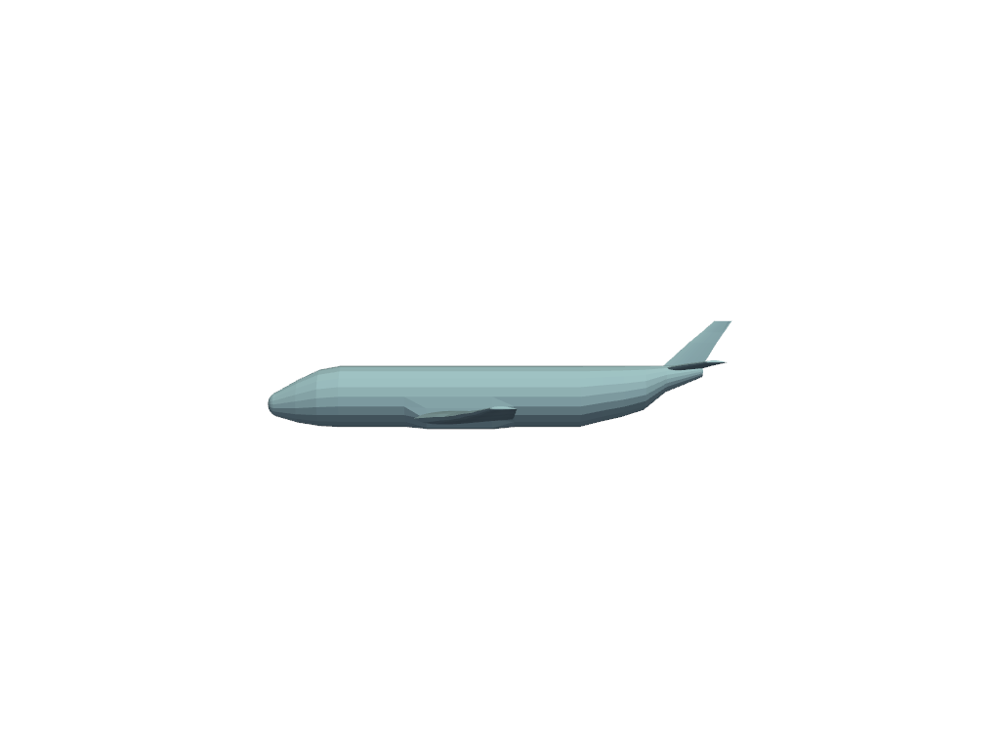

pyvista.Renderer.view_yz# Renderer.view_yz(negative=False, render=True)[ソース]# YZ平面を表示します． パラメータ: negativebool, default: False反対側から見た図． renderbool, default: Trueレンダーウィンドウが表示されている場合は，カメラ位置を設定した後にレンダーをトリガーします． 例 組み込みメッシュ例のYZ平面を表示します． >>> from pyvista import examples >>> import pyvista as pv >>> airplane = examples.load_airplane() >>> pl = pv.Plotter() >>> _ = pl.add_mesh(airplane) >>> pl.view_yz() >>> pl.show() 